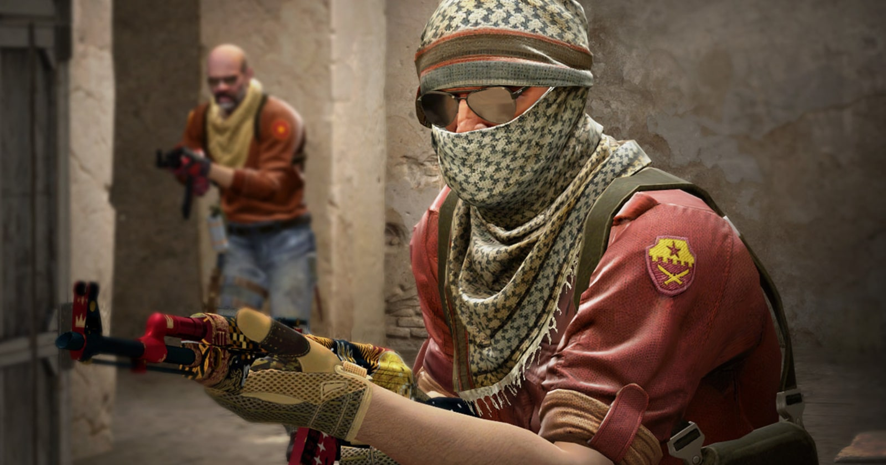
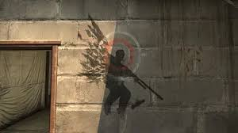
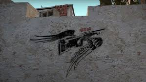
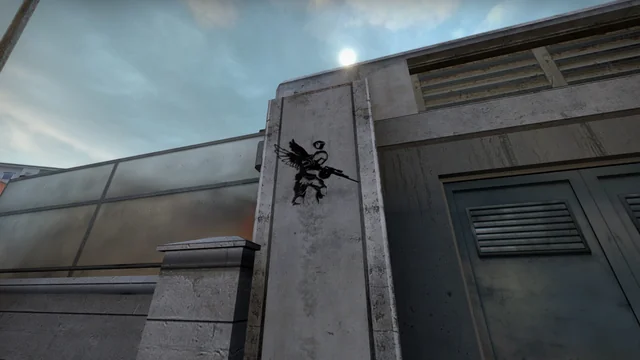
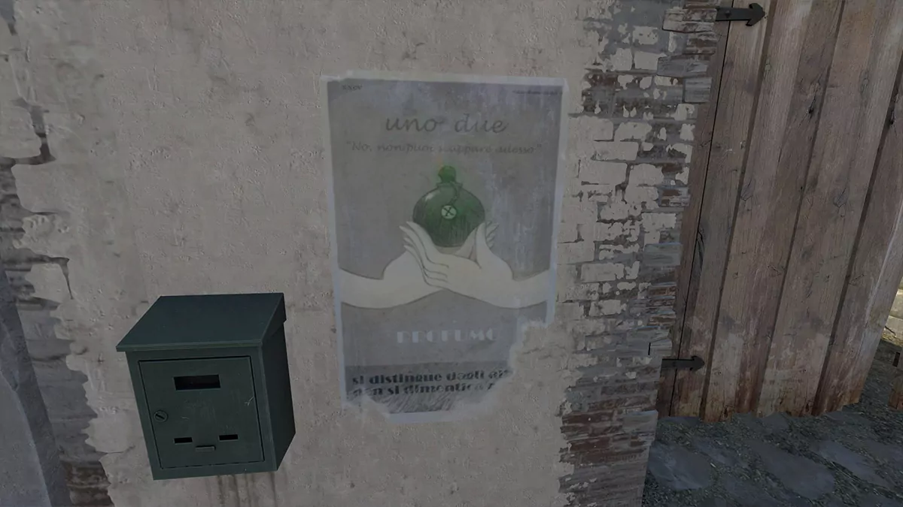

Bu sayfada Counter Strike oyunundaki bazı görseller bulunmaktadır.




Bu grafiti Counter-Strike tarihindeki en ikonik anlardan birini temsil eder. 2016 yılında ESL One Cologne turnuvasında Ukraynalı oyuncu s1mple, Cache haritasında AWP ile inanılmaz bir no-scope vuruş yaparak roundu clutchlamıştır. Bu hareket seyirciler ve oyuncular tarafından büyük ilgi görmüş ve Valve bu anıyı ölümsüzleştirmek için haritaya bu grafitiyi eklemiştir.

Bu görsel Counter-Strike tarihindeki en ünlü anlardan birini temsil eden Coldzera grafitisidir. 2016 yılında MLG Columbus Major turnuvasında Brezilyalı oyuncu Coldzera, Mirage haritasında AWP ile zıplayarak iki rakibini vurmuştur. Bu inanılmaz hareket Counter-Strike tarihinin en ikonik anlarından biri olarak kabul edilir. Valve bu olayı onurlandırmak için Mirage haritasına bu grafitiyi eklemiştir.

Bu grafiti Olofmeister’ın Overpass haritasında yaptığı ünlü boost taktiğini temsil eder. Fnatic takımının kullandığı bu boost sayesinde oyuncular beklenmeyen bir açıdan rakiplerini görebiliyordu. Bu olay Counter-Strike tarihinde çok konuşulmuş ve sonrasında oyun kurallarında değişikliklere neden olmuştur.

Bu grafiti Gambit oyuncusu Dosia’nın attığı ünlü molotofu temsil eder. Molotov sayesinde rakip takım oyuncularının canı azalmış ve takım arkadaşı kolay bir şekilde roundu kazanmıştır. Bu akıllıca hamle Counter-Strike topluluğunda uzun süre konuşulmuştur.
Ana Sayfaya Dön